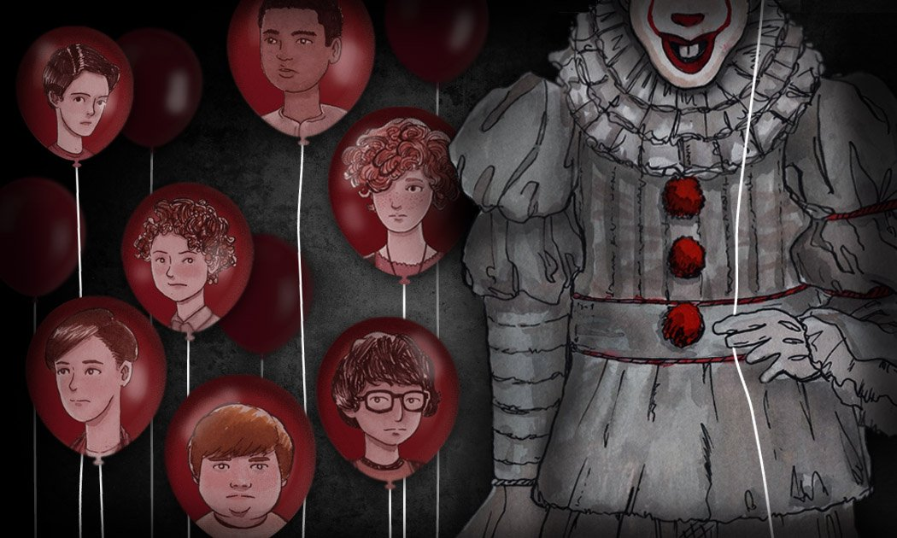
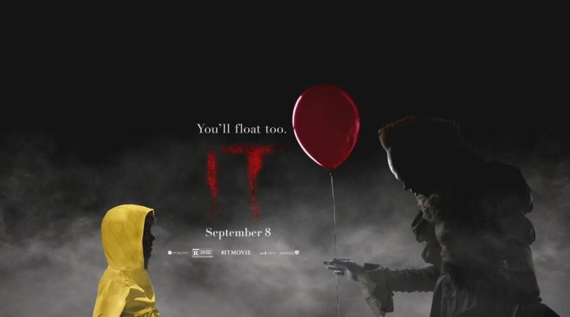

緬因州德利鎮

1988年十月，緬因州德利鎮，結巴少年比爾·丹柏因感冒在家休養時，為他的七歲弟弟喬治折一艘紙船。
喬治穿黃色雨衣獨自在傾盆大雨的郊區中玩耍，但紙船卻被水沖入下水道裏。
喬治前去查看時突然發現裏面有一個小丑，其自我介紹名叫「跳舞小丑潘尼懷斯」。
潘尼懷斯通過紙船誘使喬治伸手進去拿，一瞬間張開血盆大口咬斷喬治的右手臂，最後將他拖入下水道裏消失無蹤。
跳舞小丑潘尼懷斯

隔年1989年六月，除了喬治以外已有更多本地小孩失蹤，警察於每晚七點後實施宵禁。
比爾跟他的三位好友瑞奇·托茲、史丹利·尤瑞斯和艾迪·卡斯布拉克迎接暑假同時，
試圖躲避到處霸淩他人的亨利·鮑爾斯和他的三個跟班。
比爾依然被喬治失蹤的陰影所困擾，造成他和悲痛欲絕的父母疏離，
但比爾一直堅信弟弟還活著，於是於一年下來屢次去調查及尋找，而他這次決定帶領他的好友前去沼澤荒地的下水道口去查看。
另一邊，一位新搬來小鎮的男孩班·漢斯康因為沒什麼朋友，因此悶在圖書館閱讀小鎮歷史，
得知德利鎮自從建城起就發生過無數起不明原因的悲劇和小孩失蹤。